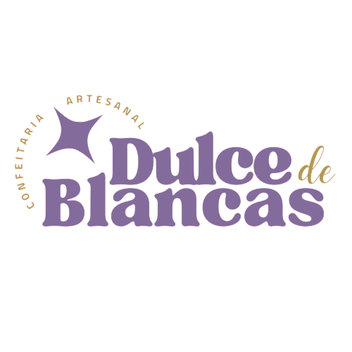
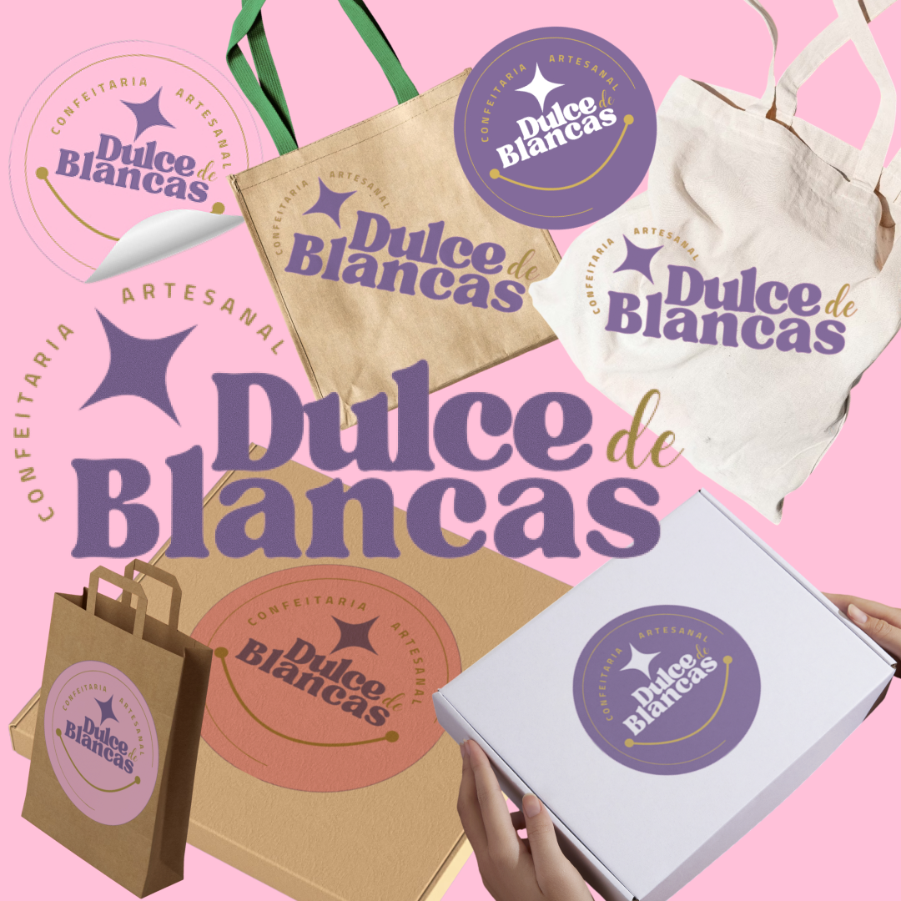
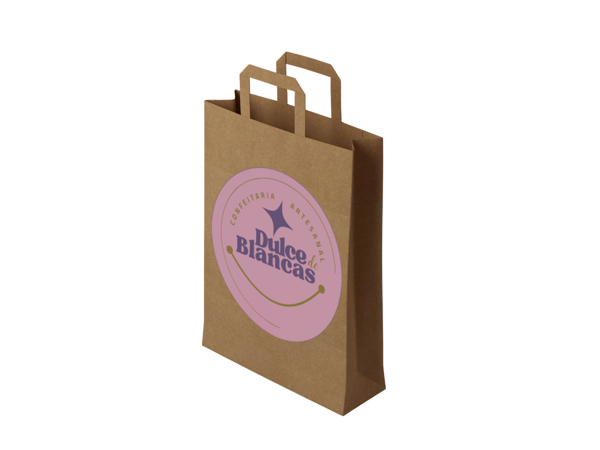
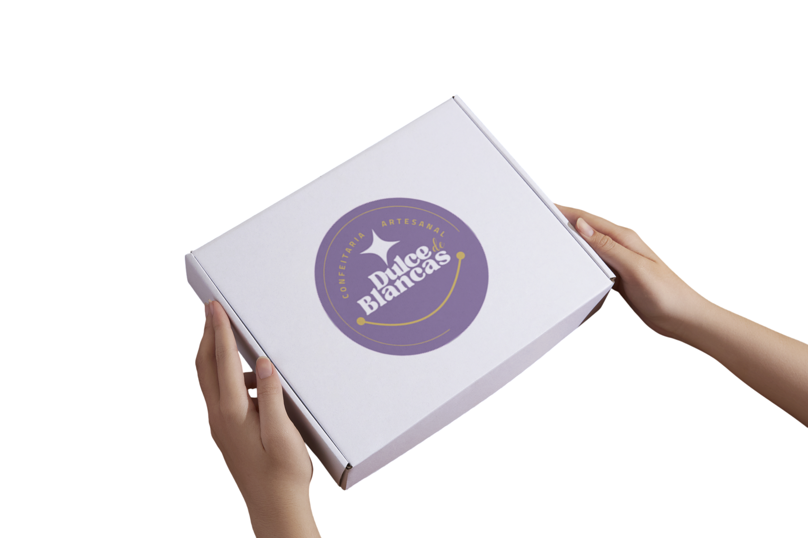
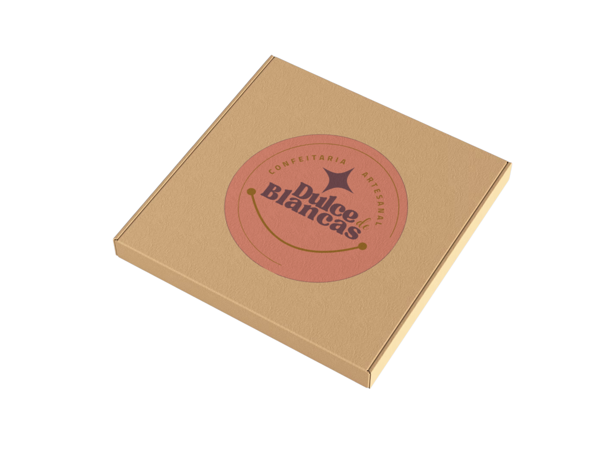
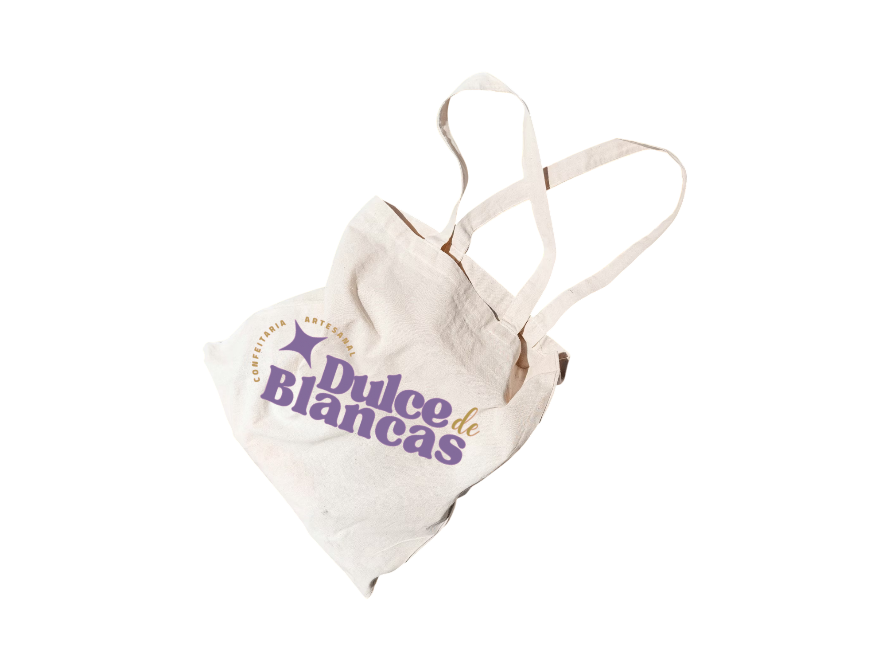
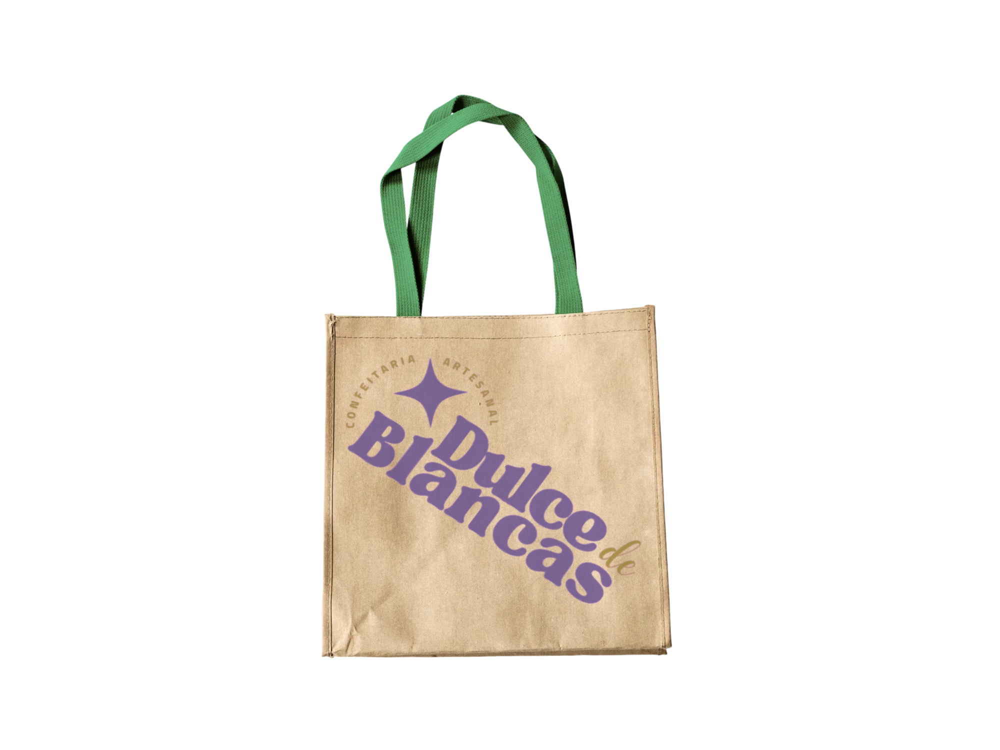
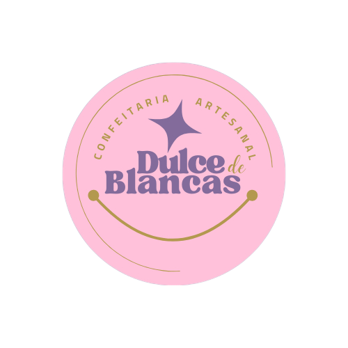
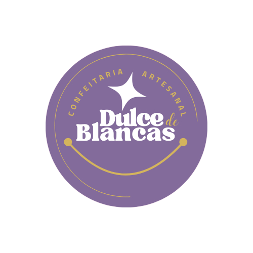
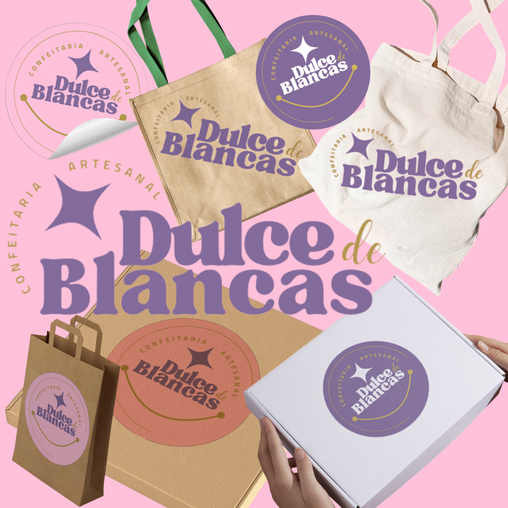

Dulce de Blancas é um projeto de design para uma confeitaria com proposta delicada e acolhedora. A identidade visual utiliza cores suaves, tipografia leve e elementos que transmitem conforto, doçura e proximidade com o público.









